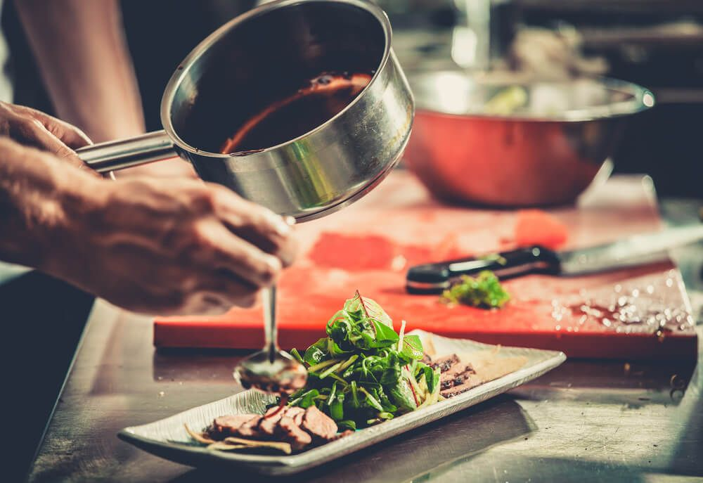

Cooking
Cooking is a passion that many people share, and I am no exception. What
I love about cooking is the ability to create delicious and nourishing
meals from scratch, using fresh ingredients and a bit of creativity.
There is a sense of satisfaction and fulfillment that comes with
preparing a meal that not only tastes great but is also good for the
body and mind. Cooking also provides an opportunity to connect with
others, whether it's sharing a meal with friends and family or teaching
someone else how to cook. It's a chance to experiment with different
flavors, techniques, and cuisines, and to constantly learn and grow as a
cook. Ultimately, cooking is a way to express myself, share my love and
passion for food, and create memorable experiences that bring people
together around the table.